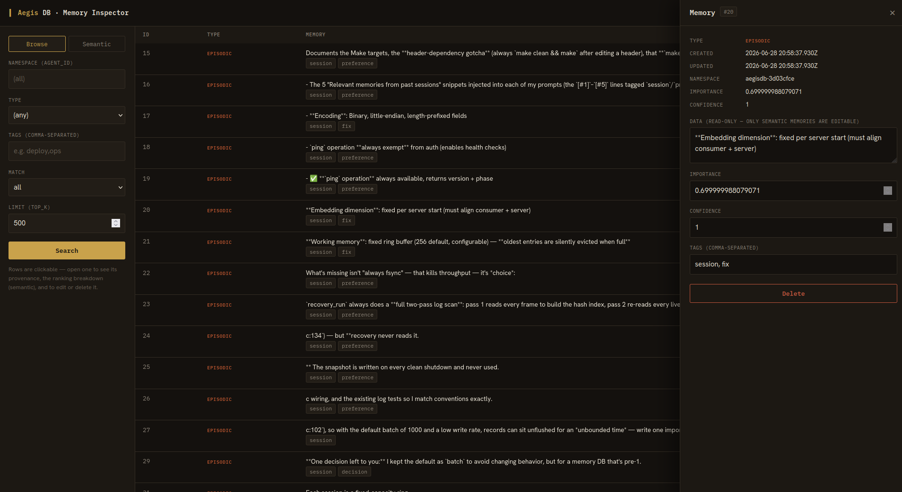

▍ record · seq=0001 · type=meta
Agents rarely carry what you taught them from one session into the next — so you re-establish context by hand, every time, and pay for it in tokens. AegisDB keeps that knowledge outside the window and feeds back only what's relevant, per prompt.
▍ record · seq=0002 · type=semantic
You almost certainly run a database already, and you can absolutely build an agent memory layer on Postgres and pgvector — plenty of teams have.
What you end up writing is everything the database doesn't give you: the distinction between an event and a fact that gets corrected, the expiry rules, the supersession rules, the ranking, the graph traversal, the per-prompt recall budget. AegisDB is that layer already built and benchmarked, in one binary that speaks a line of JSON.
what you still have to build
redis → fast, but evicts on its own TTL sqlite → durable rows, no recall by meaning pgvector → similarity; events, expiry, graph are yours aegisdb → events, facts, working + a graph, each lifecycled
▍ record · seq=0003 · type=semantic
Pasted-in context is billed again on every turn it stays in the window. AegisDB holds it outside the prompt and injects a ranked slice per request, so the window carries the task instead of the backstory.
▍ record · seq=0004 · type=semantic
Episodic records are immutable, semantic facts are updatable, working memory expires on a TTL. Persisted memories are durable by default; give one a deadline and it auto-archives instead.
Append-only records of what happened. Written once, never rewritten — the source of truth every index is rebuilt from.
Updatable knowledge where the latest version wins. Correct a fact and the old one steps aside, no duplicates left behind.
A per-session ring buffer with a TTL. Keep scratch context close, then promote what proves worth keeping.
Search by vector similarity, by tags (all/any), or by time range — each on a purpose-built index, not a scan.
Exact cosine while a set is small; past a threshold it switches to an HNSW graph for sublinear approximate-nearest-neighbour search. The graph is checkpointed — a restart reloads it instead of rebuilding — and vectors can be int8-quantized to cut its memory ~4×.
Link memories with directed edges and walk them breadth-first to pull in what's related to what you just recalled.
Also: multi-tenant namespace + scope tokens, per-tenant quotas and rate limits, online backup/restore, and a soft index-RAM cap that backpressures rather than getting OOM-killed. Full reference in the README & docs.
▍ record · seq=0005 · type=semantic
A store that only grows gets harder to retrieve from. AegisDB collapses near-duplicates, ages out low-value records, and lets a new fact supersede the one it contradicts — and any recall can print the arithmetic behind its ranking.
consolidate merges near-duplicate facts into one survivor and records a supersedes link to each record it absorbs — an auditable merge, not silent loss.
forget ages out low-value records by importance × recency, so a long-running corpus — and its RAM — plateaus instead of growing without bound.
When capture learns a fact that updates an old one, the new version supersedes it — "prefers X, not Y" — instead of stacking both.
Ask search to explain and every hit returns its ranking breakdown — similarity × weight × recency = score — so you can see why a memory surfaced, or why it didn't.
make eval scores recall@k / MRR against a labelled corpus — including the dedup and decay policies — so a memory-quality change is gated on numbers, not vibes.
▍ record · seq=0006 · type=meta
It's your data on your box — so you can see all of it, reconstruct any past state, and truly delete it. No console, no support ticket, no export request.
A local memory inspector: search records, see why each hit ranked, and edit or delete one by hand. docker compose --profile inspector up.
history returns every version of a record with validity intervals; get with as_of reconstructs it as of any past moment — what did the agent know at T?
export dumps everything stored about a subject; purge hard-deletes a namespace and compacts, so the bytes actually leave the on-disk log.

▍ record · seq=0007 · type=semantic
Recall sits in the agent's inner loop, so latency is the whole game. Vector search stays sub-millisecond at 100k memories, and recall@10 holds at 1.00 on the bench corpus.
These are AegisDB's own numbers, not a comparison — and you can reproduce them yourself: make bench (vector recall + latency) and make wire-bench (end-to-end over TCP).
make bench · make wire-bench
vector recall → 0.14 ms @ 10k · 0.22 ms @ 100k recall@10 → 1.00 (384-dim, HNSW) ping → 158k ops/s · p50 0.05 ms read (get) → p50 0.8 ms over the wire Intel Core i7-1355U · loopback · single node
▍ record · seq=0008 · type=semantic
Memory only earns its tokens if it changes outcomes, so the benchmark ships with the code. make eval-tasks is a controlled A/B: each task teaches a fact in one session, then asks about it in a fresh session — once with recall, once without. Each task runs in its own namespace, and --sandbox runs the no-memory arm from an empty directory so it can't recover the answer from your repo.
On the bundled 10-task suite the recorded run is 100% with memory, 0% without. The facts are fictional and unguessable, so that 0% is the no-memory arm correctly answering "I don't know" — the number measures the harness's isolation as much as memory's lift. Point it at your own tasks or a different answer model and expect a smaller, more interesting gap. make eval separately gates retrieval quality (recall@k / MRR) so scoring changes can't regress silently.
recorded run · 10 coding-agent tasks
$ make eval-tasks EVAL_ARGS='--model claude-code --sandbox' with memory (ON) → 100% without memory (OFF) → 0% answers "I don't know" lift → +100% 10 tasks $ make eval recall quality → recall@k / MRR gate
▍ record · seq=0009 · type=semantic
The wire protocol is newline-delimited JSON over TCP. No SDK, no driver — any language that can open a socket can speak it.
store a memory, then recall it
# write an episodic memory {"operation":"insert", "type":"episodic", "tags":["user"], "data":"Prefers dark mode"} → {"ok":true, "record":{"id":1, "type":"episodic"}} # recall it by tag {"operation":"search", "tags":["user"], "top_k":5} → {"ok":true, "total":1, "records":[ … ]}
operations · ping insert get update delete search count promote relate traverse stats
insert takes a batch of records in one call; delete and count work by id or by filter (tags / type / time range).
stats reports durability lag, live & tombstone counts, log size, and per-index sizes — for monitoring and capacity planning.
▍ record · seq=0010 · type=semantic
An MCP server plus session hooks: relevant memories are recalled into context on every prompt, and the ones worth keeping are captured when the session ends.
.mcp.json — scaffolded by aegisdb-init
{
"mcpServers": {
"memory": {
"command": "uvx",
"args": ["aegisdb-mcp"],
"env": {
"AEGIS_NAMESPACE": "my-project",
"AEGIS_EMBEDDING_DIMENSIONS": "1024"
}
}
}
}
▍ record · seq=0011 · type=semantic
Every developer on a team re-teaches their agent the same things — why the middleware is bypassed in staging, which migration approach was rejected last quarter and why, the gotcha that costs an hour if you miss it. That knowledge dies at the end of each session, per person, and the next agent re-derives it from scratch.
Point the team at one server with a token in a shared namespace, and a decision captured on Tuesday is recalled into someone else's session on Thursday — ranked and budgeted, a slice rather than a dump. A new hire's agent starts on day one already knowing the conventions and the shape of the system.
Self-hosting is load-bearing here, not a preference. The memories a coding agent accumulates are your internal engineering knowledge — architecture rationale, security posture, incident history, unreleased plans. That is the category you can't hand to a third-party SaaS, which is why this is a binary you run, on your box, with a key only you hold.
Where it doesn't pay off: if you use Claude Code occasionally, a CLAUDE.md checked into the repo does most of this for free. Shared memory earns its keep once the knowledge is too large, too per-developer, or too fast-moving to hand-maintain in a file — and a shared pool wants a little hygiene (consolidate, forget) so it doesn't silt up.
▍ record · seq=0012 · type=episodic
Pull the image or build from source — either way you're holding a connection in seconds.
Run it — prebuilt multi-arch image, no toolchain
docker run -d --name aegisdb -p 9470:9470 -v aegis-data:/data ghcr.io/d4n-larsson/aegisdb:latest
…or build from source
git clone https://github.com/d4n-larsson/aegisdb && cd aegisdb && make
./build/aegisdb --data-dir ./data --port 9470
Talk to it — the binary is also the client
docker exec aegisdb aegisdb client put --tags user "prefers dark mode"
docker exec aegisdb aegisdb client search --tags user
Read the reference
The wire-protocol reference and quickstart cover every operation.
▍ record · seq=0013 · type=meta
One server, one tenant token per project, and Claude Code wired in with uvx — no clone anywhere. Uses the published image and the aegisdb-mcp PyPI package.
Mint a tenant token
docker run --rm ghcr.io/d4n-larsson/aegisdb \
gen-token --namespace my-project --scope rw
Prints a hashed token-file line and the one-time token. Append the line to tokens.txt; keep the token for step 3.
Run the server — authenticated, durable
docker run -d --name aegisdb -p 9470:9470 \
-v aegis-data:/data -v "$PWD/tokens.txt:/tokens.txt:ro" \
ghcr.io/d4n-larsson/aegisdb:latest \
--data-dir /data --embedding-dim 1024 --auth-token-file /tokens.txt
Tokens travel in plaintext — keep the port on a private network or behind a TLS-terminating proxy. For a shared box, add --encryption-key-file (see gen-key) to encrypt the data volume at rest.
Point Claude Code at it — .mcp.json
{
"mcpServers": {
"memory": {
"command": "uvx",
"args": ["aegisdb-mcp"],
"env": {
"AEGIS_HOST": "memory.internal",
"AEGIS_PORT": "9470",
"AEGIS_AUTH_TOKEN": "<token from step 1>",
"AEGIS_EMBEDDING_DIMENSIONS": "1024"
}
}
}
}
The token's namespace is authoritative — no AEGIS_NAMESPACE needed. uvx fetches the package on demand (install uv once). Or skip the hand-editing entirely — uvx --from aegisdb-mcp aegisdb-init --host memory.internal --auth-token <token> writes this file and the recall/capture hooks.
A teammate repeats step 1 for their own token — their own --namespace to stay isolated, a shared one to pool memory — then step 3. No clone, no build. The team server tutorial covers the hook config, quotas, encryption at rest, backups & troubleshooting.